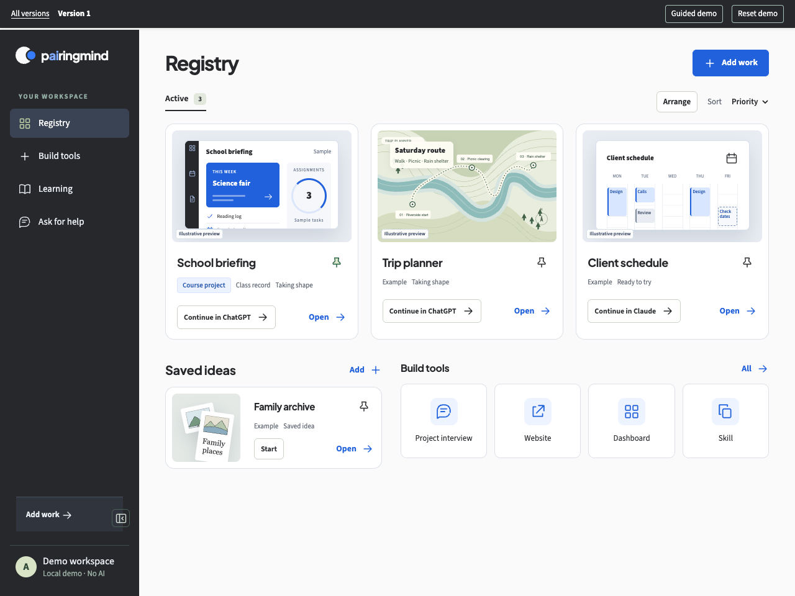

Registry comparison
About this demo
All three use the same anonymized class record. Previews and exercise updates are illustrative. Edits stay in this browser. No student accounts or AI tools are connected.
Same example · Separate layouts · Browser-only edits